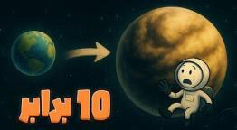

اگر زمین ده برابر بزرگتر بود چه میشد؟

چی شد؟ چرا نمیتوانم تکان بخورم؟ انگار یک تریلی ۱۸ چرخ را پارک کردهاند روی سینهام. نفسم بالا نمیآید. یا خدا، چه اتفاقی افتاده؟ دور و برم را نگاه میکنم. همهچیز سر جایش است. خانه، خیابان. ولی یک حس لهشدگی مطلق دارم. تلاش میکنم دستم را بلند کنم. نمیشود. انگار دستم از سرب ساخته شده. این دیگر چه کوفتی است؟ صبر کن ببینم. افق چرا اینقدر دور است؟ آسمان چرا یک جور دیگر است؟
تبریک میگویم رفقا. شما همین الان در یک کابوس گرانشی بیدار شدهاید. به سیارهٔ جدیدتان خوش آمدید. ابرزمین. یک کپی غولپیکر از خانهٔ قدیمیمان، اما با شعاعی ۱۰ برابر بزرگتر. فکر کردید مشکل ترافیک و گرونی آخر دنیاست؟ صبر کنید تا بفهمید زندگی در دنیایی که جاذبهاش کمرتان را مثل چوب کبریت میشکند چه شکلی است. بهتر است آماده باشید، چون داریم سقوط میکنیم در دل این غول سنگین.
جاذبهٔ دیوانهوار
اولین چیزی که مثل پتک میخورد به شما، همین جاذبهٔ دیوانهوار است. نیوتون و آن سیب را یادتان هست دیگر. خب حالا به جای یک سیب فرض کنید کل درخت سیب، با ریشه و خاکش، افتاده روی شما. قانونش ساده است. جرم بیشتر مساوی است با کشش بیشتر.
سیارهای با شعاع ۱۰ برابر، حجمش میشود هزار برابر، یعنی ۱۰ به توان ۳. اگر چگالیاش مثل زمین خودمان باشد، جرمش هم تقریباً هزار برابر میشود. و این یعنی جاذبه روی سطحش ۱۰ برابر قویتر از جاذبهٔ زمین خودمان است. ۱۰ برابر یعنی چه؟ یعنی اگر شما یک آدم ۷۰ کیلویی خوشتیپ باشید، روی این ابرزمین حس میکنید ۷۰۰ کیلوگرم وزن دارید. تصور کنید یک گاوصندوق بزرگ را ۲۴ ساعته با چسب نواری بهتان چسباندهاند.
بلند شدن از تخت یک حرکت وزنهبرداری المپیکی است. رفتن از پله؟ بیخیال شوید. همان پایین بمانید امنتر است. میخواهید یک لیوان آب بخورید؟ موفق باشید با بلند کردنش. قلبتان باید خون یک بدن ۷۰۰ کیلویی را پمپاژ کند. استخوانهایتان زیر این فشار ناله میکنند و احتمالاً تاب نمیآورند. حتی نفس کشیدن هم یک کار طاقتفرساست، چون قفسهٔ سینهتان به سختی میتواند در برابر این وزن منبسط شود. کلاً زندگی تبدیل میشود به یک مسابقه: کی زیر فشار له نمیشود.
فرار ممنوع
فکر فرار از این جهنم گرانشی را از سرتان بیرون کنید. سرعت فرار از زمین خودمان حدود ۱۱ کیلومتر بر ثانیه است. یعنی موشک باید به این سرعت برسد تا بتواند از چنگ جاذبه دربرود. روی این ابرزمین سرعت فرار میشود حدود ۱۱۲ کیلومتر بر ثانیه. قویترین موشکهای ناسا و اسپیسایکس جلوی این جاذبه مثل فشفشههای چهارشنبهسوری میمانند. زورشان در حد بلند شدن از روی سکو هم نیست. پس بله، ما روی این سیارهٔ غولپیکر زندانی ابدی هستیم. پروندهٔ سفر فضایی، اکتشافات کیهانی، عکس سلفی با ماه، همهاش بسته شد رفت پی کارش. تا وقتی علممان به این سرعت برسد، که الان نمیرسد.
قلب سیاره خاموش میشود
خب فکر نکنید مشکلات فقط روی سطح است. اصل ماجرا در قلب این غول است. هستهٔ آهنی زمین اینجا خیلی بزرگتر و سنگینتر است و فشاری که لایههای بالایی به آن میآورند غیرقابل تصور است. این فشار آنقدر زیاد است که دانشمندها میگویند احتمالاً باعث میشود هستهٔ خارجی زمین، که الان مایع و داغ است و مثل یک دینام غولپیکر میچرخد، جامد شود.
میپرسید خب که چه؟ آن هستهٔ مایع در حال چرخش، میدان مغناطیسی زمین را تولید میکند. همان سپر نامرئی حیاتی که مثل یک چتر محافظ جلوی ذرههای باردار پرانرژی خورشید را میگیرد. این ذرهها اگر بیمانع برسند، میتوانند دیانای را خراب کنند و بیماری بیاورند. حالا اگر هسته جامد شود، دینام زمین خاموش میشود. سپر پایین میآید و بدبخت میشویم.
هوا مثل ته اقیانوس
حالا میرسیم به هوا. اتمسفر. جاذبهٔ ۱۰ برابری گازها را مثل چسب دغل نگه میدارد. حتی گازهای سبکی مثل هیدروژن و هلیوم، که الان از جو زمین فرار میکنند، اینجا گیر میافتند. نتیجه یک اتمسفر فوقالعاده ضخیم، فشرده و سنگین. فشار هوا روی سطح ممکن است دهها یا حتی صدها برابر فشار فعلی شود. قدم زدن روی این ابرزمین مثل این است که ته عمیقترین گودال اقیانوسی راه بروید. ریههایتان زیر این فشار آه و نالهشان درمیآید.
اینجا یک نکتهٔ مهم پیش میآید. شاید فکر کنید خب این اتمسفر ضخیم جلوی آن تشعشعات مرگبار را میگیرد دیگر. مگه نه؟ نه دقیقاً. ببینید، اتمسفر، مخصوصاً لایهٔ اوزون، جلوی اشعهٔ فرابنفش یا همان یووی خورشید را خوب میگیرد. مثل یک عینک دودی خیلی قوی. ولی آن سپر مغناطیسی بود که جلوی ذرههای باردار پرانرژی، همان پروتونها و الکترونهای پرسرعت، را میگرفت. کار این دو تا فرق دارد.
وقتی سپر مغناطیسی از کار بیفتد، آن ذرهها با سرعت زیاد به بالای اتمسفر ضخیم ما برخورد میکنند. مثل یک بمباران دائمی. این برخوردها بارانی از تابش ثانویه میسازند که میتواند از اتمسفر، هرچقدر هم ضخیم باشد، عبور کند و به سطح برسد. پس ما همزمان زیر فشار خردکنندهٔ هوا له میشویم، زیر دوش رادیو اکتیو کباب میشیم ، و جاذبه هم یک روز خوش برایمان نمیگذارد.
تازه این فشار داخلی وحشتناک در هسته باید یک جوری خالی شود. چطور؟ از طریق آتشفشانهای غولپیکر و دائمی. کل سیاره تبدیل میشود به یک جهنم آتشفشانی، با آسمانی همیشه قرمز و پر از خاکستر سمی.
سیارهٔ پهن، بدون اورست
شکل و شمایل خود سیاره چه؟ مساحت سطحش ۱۰۰ برابر میشود. اقیانوسهای وسیع، و شاید کمعمق به خاطر فشار زیاد، آب بیشتر سطح را میپوشانند. اما کوهها؟ اورست، دماوند، زاگرس را فراموش کنید. جاذبهٔ هیولایی بلندترین رشتهکوهها را مثل خمیر بازی صاف میکند. تبدیلشان میکند به تپههای کوتاه و بیرمق. این ابرزمین یک دنیای پهن و نسبتاً هموار خواهد بود. بدون قلههای باشکوهی که بشود فتحشان کرد. البته اگر اصلاً میتوانستید راه بروید. شاید تنها کوههایی که وجود داشته باشند، کوههای آتشفشانی باشند که به زور فشار داخلی زمین بیرون زدهاند.
زندگی با بدترین شرایط
و اما زندگی. ما، حیوانات، گیاهان، تکلیف چیست؟ همانطور که گفتیم، با وزن ۷۰۰ کیلویی استخوانهایمان مثل بیسکویت خرد میشوند. قلبمان طاقت این همه فشار را ندارد. حتی اگر زنده بمانیم، باید موجوداتی باشیم کوتاهقد، فوقالعاده عضلانی و فشرده، با استخوانهایی به کلفتی تنهٔ درخت. شاید بیشتر شبیه خرچنگهای زرهپوش باشیم تا انسان. قد بلند بودن اینجا یک حکم سنگین است.
پرواز مطلقاً غیرممکن بود. پرندهها، حشرات، هیچکدام نمیتوانند حتی یک سانت از زمین بلند شوند. بالهایشان توان مقابله با این جاذبه را ندارد. حتی حشرات غولپیکر هم به خاطر فشار هوا و مشکلات تنفسی دوام نمیآورند. تنوع زیستی به شدت سقوط میکند و شاید فقط موجودات میکروسکوپی، یا آنهایی که در اعماق اقیانوس یا زیر زمین زندگی میکنند، شانسی داشته باشند.
حالا فرض محال، یک تمدن هوشمند توانسته اینجا شکل بگیرد. چطور زندگی میکنند؟ اولاً خداحافظ ستارهها. هیچوقت نمیتوانند از سیارهشان خارج شوند. ارتباطاتشان شاید فقط با کابلهای قطور زیرزمینی باشد. ساختمانسازی: خبری از برج میلاد و امپایر استیت نیست. ساختمانها باید کوتاه، پهن و فوقالعاده محکم باشند تا زیر وزن خودشان فرو نریزند. شاید بیشتر شبیه سنگرهای بتنی باشند. حملونقل هم نیاز به ماشینها و قطارهایی با موتورهایی به قدرت یک نیروگاه دارد، تا فقط بتوانند یک تپهٔ کوچک را بالا بروند. زندگی به شدت کند، محدود و طاقتفرسا بود.
یعنی تکامل روی این سیاره از ابتدای خلقت اینطور پیش نمیرفت که الان رفته. در چنین ابرزمینی، به خصوص با این گرانش، انسانی به شکل ما شکل نمیگرفت. اگر هم موجودی تکامل پیدا میکرد، خیلی جانسخت، عضلهای و قدکوتاه بود. تازه اگر با این شرایط هوشمند میبود، باز هم تمدنش آنقدر پیشرفت نمیکرد، به خاطر شرایط بد.
یک تغییر ساده در شعاع سیارهٔ فعلیمان، آن را از یک بهشت آبی تبدیل میکند به یک جهنم گرانشی، آتشفشانی و پرتوزا. دم همین زمین گرم. تا فکر بعدی، کنجکاو بمان.